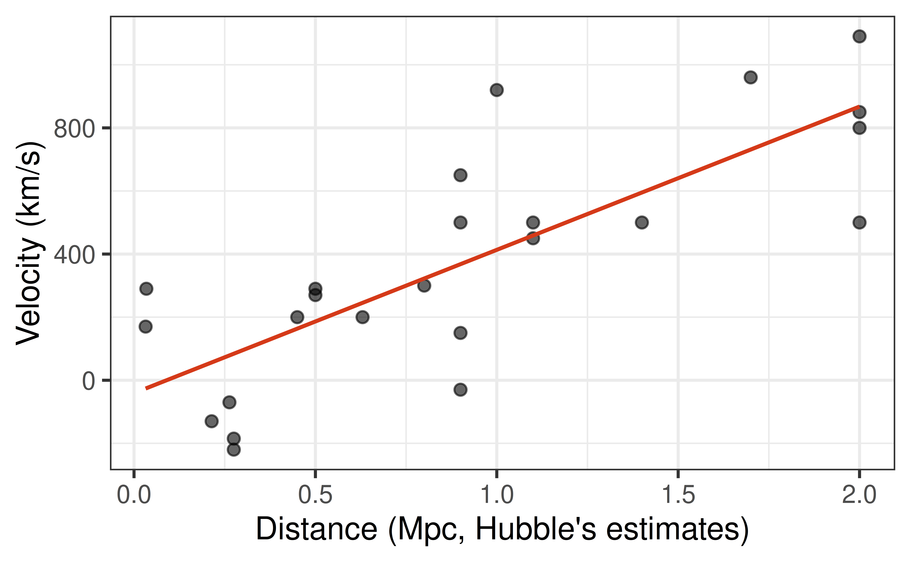
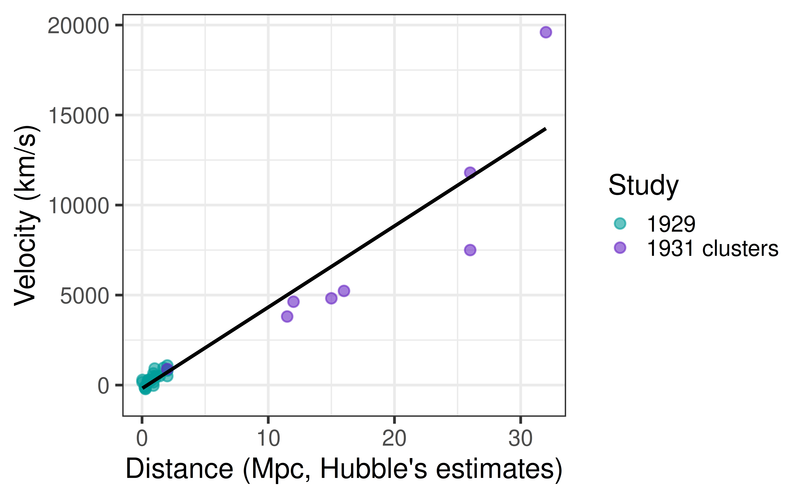
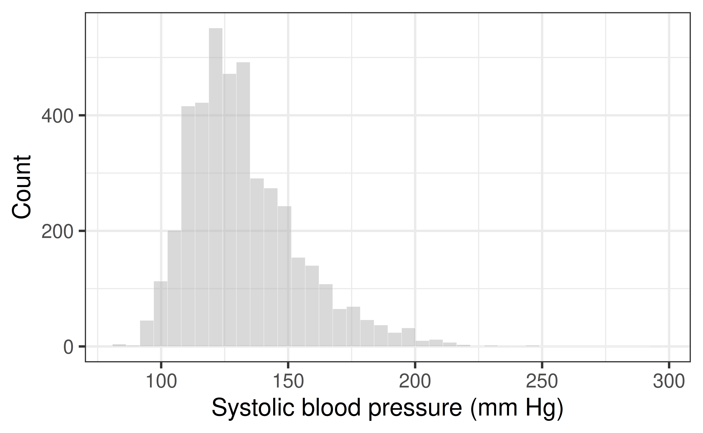
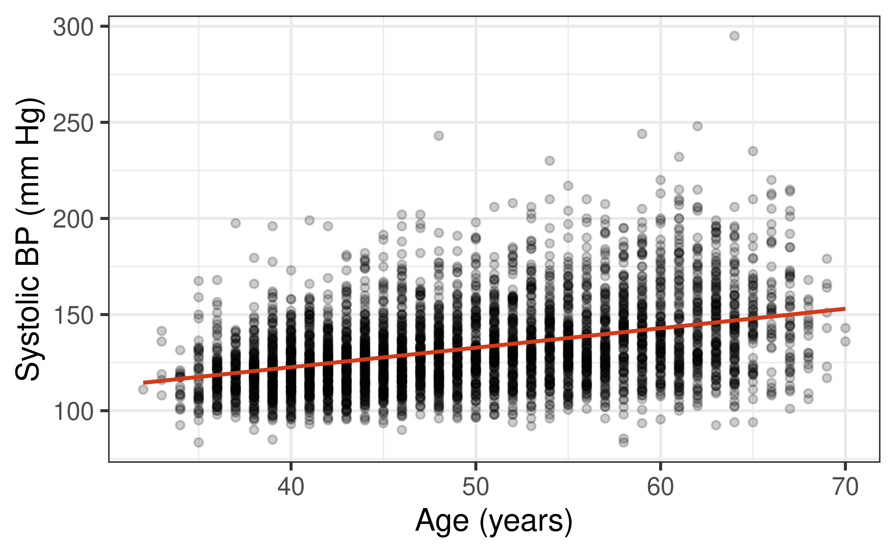
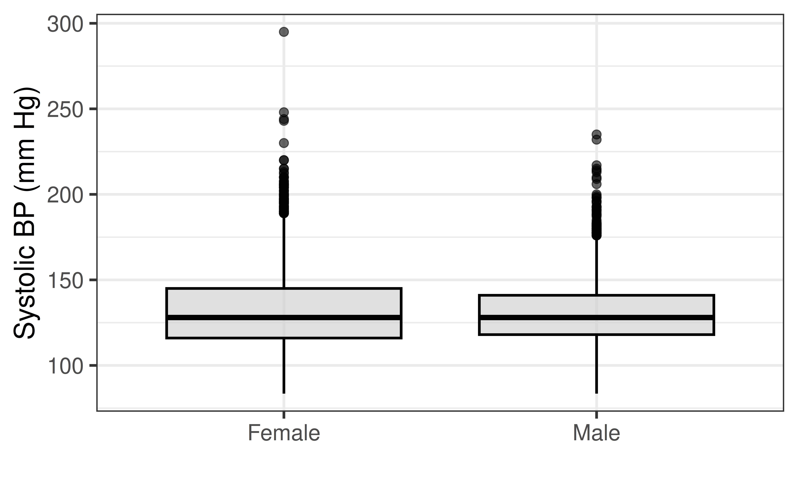
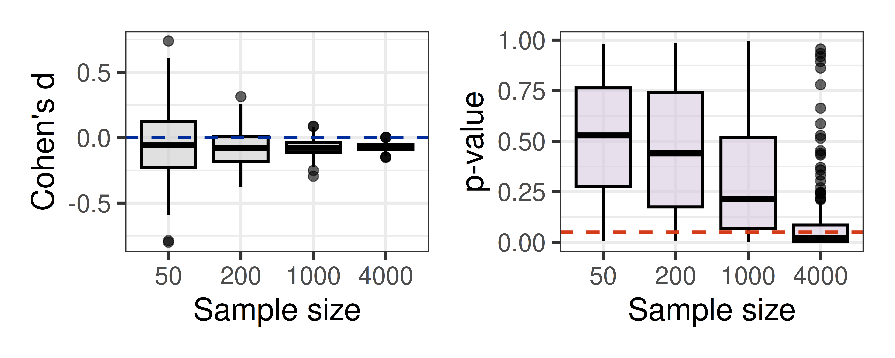

Effect Size
Is it real? Is it big?
Prof. Eric Friedlander
Where we are
Last time we saw that power depends on four things: sample size, \(\alpha\), variability, and the size of the slope. Today we start by finishing our power analysis for Hubble’s study (AE 14), then turn to effect size.
At the end of last time we noticed something strange:
Why did halving the slope and doubling the noise give the same power curve?
Because power depends on the slope relative to the noise. Today we give that idea a name: effect size.
- Finish the power analysis (AE 14, Parts 3 and 4).
- Two kinds of questions: a slope and a difference in means.
- \(R^2\) and Cohen’s \(d\) as measures of effect size.
- Effect size vs. sample size vs. power.
Finishing the power analysis
In Hubble’s shoes
It is the 1920s and you are Edwin Hubble. Every point on the plot costs you enormous effort:
- Each velocity needs a spectrum of a faint galaxy, photographed through the 100-inch telescope at Mount Wilson, then the largest in the world.
- Exposures take many hours, often over several nights, and telescope time is scarce.
- Distances are even harder: you must find and measure individual stars in each galaxy.
- The 100-inch telescope Edwin Hubble used cost $500,000 in 1917 which is about $13M today. . . .
Before spending years collecting data, we want to make sure that we can detect the effect if it exists.
What would you need to know, or assume, to figure out how many galaxies to measure?
Power analysis
A power analysis is done before collecting data:
- Decide on the smallest relationship you would care about (this is a judgment about practical significance, not a statistics question).
- Choose a target power, often 80%. Trade off the cost of a Type II error against the cost of more data.
- Use simulation (or a formula) to find the sample size that achieves it.
- Collect that much data.
Caution
Power computed from the effect you already observed only tells you how your study behaved. It is not a guarantee about a future study, because the observed effect is itself a noisy estimate.
What should we assume?
| We choose | We must assume |
|---|---|
| Significance level \(\alpha\) | The true slope \(\beta_1\): how fast does the universe expand? |
| Target power | The noise \(\sigma\): how much do galaxies scatter around the line? |
- Significance level: \(\alpha = 0.05\).
- Noise: galaxies have their own motions, about 150 to 200 km/s, plus measurement error on photographic spectra, about 40 km/s. Together, \(\sigma \approx 175\) km/s.
- Reach: the telescope can reach galaxies out to 2 Mpc, spread evenly.
What about slope?
This is the hard one. We need a principled guess, and we will consider three (in Hubble’s 1920s distance units):
| Prior | Slope (km/s per Mpc) | Where it comes from |
|---|---|---|
| Optimistic | 575 | Lemaitre’s 1927 estimate, from Slipher’s velocities and early distances |
| Plausible | 450 | Slipher’s average unexplained recession of the nebulae |
| Conservative | 100 | A smaller slope, of the same order as Slipher’s and Lemaitre’s estimates, but reduced in case they were over-estimates |
Activity
- Continue with Part 3: choose a slope from the priors above and see how much your assumptions matter.
- Choose your own target power, then find the sample size you would need.
- Finished early? Analyze Hubble’s real data (Part 4).
Hubble’s actual data
Hubble’s 1929 data

| term | estimate | std.error | statistic | p.value |
|---|---|---|---|---|
| (Intercept) | -40.784 | 83.439 | -0.489 | 0.63 |
| distance_mpc | 454.158 | 75.237 | 6.036 | 0.00 |
Hubble’s slope is about 454 km/s per Mpc, roughly 6 times today’s value. His distances were too small (he did not know about two types of Cepheids). But a relationship was there to see: right in the range of our priors.
Hubble and Humason’s 1931 data

The Framingham Heart Study
Where does blood pressure come from?
In 1948, researchers began following residents of Framingham, Massachusetts to learn what causes heart disease. It is one of the most influential studies in medicine, and it gave us the term “risk factor.”
We have 4,240 participants. Our response is systolic blood pressure (sysBP, mm Hg), the top number in a blood pressure reading.
- Quantitative predictors:
age,BMI,totChol,heartRate, … - Binary predictors:
male,diabetes,currentSmoker, …

A slope: age
Does blood pressure rise with age?

| term | estimate | std.error | statistic | p.value |
|---|---|---|---|---|
| (Intercept) | 82.1420 | 1.8257 | 44.9920 | 0 |
| age | 1.0128 | 0.0363 | 27.9112 | 0 |
What is the conclusion of the test of the slope? Is the relationship detectable? Looking at the plot, is it big?
\(R^2\) as an effect size
| r.squared | adj.r.squared | sigma | statistic | p.value | df | logLik | AIC | BIC | deviance | df.residual | nobs |
|---|---|---|---|---|---|---|---|---|---|---|---|
| 0.1553 | 0.1551 | 20.2529 | 779.0353 | 0 | 1 | -18770.49 | 37546.97 | 37566.03 | 1738346 | 4238 | 4240 |
- \(R^2 =\) 0.155: age explains about 15.5% of the variation in blood pressure (recall PRE from Lecture 7).
- The p-value is astronomically small (less than \(10^{-100}\)).
The p-value tells us the relationship is detectable. \(R^2\) tells us how much of the story it explains: it compares the signal (the slope) to the noise (the scatter around the line).
A difference in means: sex
Do men and women differ?

| term | estimate | std.error | statistic | p.value |
|---|---|---|---|---|
| (Intercept) | 133.0401 | 0.4477 | 297.1934 | 0.0000 |
| sexMale | -1.5970 | 0.6833 | -2.3372 | 0.0195 |
What does the intercept mean? What does the slope mean? Is the difference statistically significant at \(\alpha = 0.05\)?
Significant. But is it big?
Men’s average blood pressure differs by only 1.6 mm Hg (p = 0.019). The overall SD of blood pressure is about 22 mm Hg.
How do we say “a difference of 1.6 mm Hg, compared to the noise”? Divide by the noise:
\[ d = \frac{\bar{y}_1 - \bar{y}_2}{s_{pooled}}, \qquad s_{pooled} = \sqrt{\frac{(n_1 - 1)s_1^2 + (n_2 - 1)s_2^2}{n_1 + n_2 - 2}} \]
This is Cohen’s \(d\): the difference in means, measured in standard deviations.
Exploring the formulas
\[ d = \frac{\bar{y}_1 - \bar{y}_2}{s_{pooled}}, \qquad s_{pooled} = \sqrt{\frac{(n_1 - 1)s_1^2 + (n_2 - 1)s_2^2}{n_1 + n_2 - 2}} \] These look big and complicated… Let’s think about what they actually are…
Thinking back to our regression equation… What is \(\bar{y}_1-\bar{y}_2\) or \(\bar{y}_{male} - \bar{y}_{female}\) the same as?
\[ d = \frac{\bar{y}_1 - \bar{y}_2}{s_{pooled}} = \frac{\hat{\beta}_1}{s_{pooled}} \]
Let’s do some algebra on the board for \(s_{pooled}\)…
\[ s_{pooled} = \sqrt{\frac{(n_1 - 1)s_1^2 + (n_2 - 1)s_2^2}{n_1 + n_2 - 2}} = \sqrt{\frac{SSE}{n-2}} = \hat{\sigma}_\epsilon \]
Computing Cohen’s \(d\)
Many ways to do this in R… all slightly different… We’ll use the cohens_d function from the effectsize package:
Cohen's d | 95% CI
------------------------
0.07 | [0.01, 0.13]
- Estimated using pooled SD.How can a difference this small be statistically significant?
A bigger effect: diabetes

Only 109 participants have diabetes, yet the difference is about 15.5 mm Hg, with \(d \approx\) 0.71.
Which has the smaller p-value: sex (n = 4,240, \(d \approx 0.07\)) or diabetes (n = 109 in one group, \(d \approx 0.7\))? Which is the bigger effect?
Effect size
What is an effect size?
An effect size measures how big a relationship is relative to the noise in the data.
- It does not depend on the sample size (other than ordinary sampling variability).
- The p-value does depend on the sample size: more data pushes p-values down, even when the effect is tiny.
| Situation | Effect size | Meaning |
|---|---|---|
| Quantitative predictor | \(R^2\) (PRE) | Fraction of variation in \(Y\) explained |
| Two groups | Cohen’s \(d = \dfrac{\bar{y}_1 - \bar{y}_2}{s_{pooled}}\) | Difference in means, in SD units |
- Warning: the noise or sd we refer to is of the data, not the sampling distribution (i.e. not the standard error).
A warning on effect size
Different communities that use statistics frequently mean different things when they say effect size:
- Everyone usually means “Is the size of my coefficient large?” (in this case the raw slope would be considered a measure of effect size).
- Most statisticians mean “Is the size of my coefficient large compared to my variation?” (This is the definition we will use in class.)
- Note that this definition requires two things: a measure of the raw size and a measure of the variability.
How does \(R^2\) include both of these measures in it? How does Cohen’s \(d\)?
Rules of thumb
- There are general guidelines for what makes a large effect size (you can google them).
- What counts as a meaningful effect depends on the problem. So I will not present them.
Is a 1.6 mm Hg difference in blood pressure meaningful? What about 10 mm Hg? Who decides?
Activity: Parts 1 and 2
- Part 1: compute \(R^2\) for a slope (
BMI) and compare it to age. - Part 2: compute Cohen’s \(d\) for diabetes by hand, then check it with the regression slope divided by \(\hat{\sigma}_\epsilon\) and with
cohens_d()from theeffectsizepackage. - We will pick back up at the countdown.
Effect size, sample size, and power
Effect size does not grow with \(n\)
Treat Framingham as a population. Take samples of size \(n\), and compute Cohen’s \(d\) for sex and the p-value each time.

What happens to \(d\) as \(n\) grows? What happens to the p-value?
Effect size does not grow with \(n\)
Treat Framingham as a population. Take samples of size \(n\), and compute Cohen’s \(d\) for sex and the p-value each time.

What happens to \(d\) as \(n\) grows? What happens to the p-value?
Effect size and power

This is the same idea as halving the slope and doubling the noise. Bigger effect size means more power at the same \(n\). Roughly how many people do we need for 80% power for each predictor?
Practice
For each of the following questions, tell me whether you should answer it using a p-value, an effect size, or both:
- Is there convincing evidence that sex explains any of the variation in blood pressure?
- Do I sell more cups of coffee in the park or in the business district?
- Is the increase in the number of cups of coffee I sell meaningful?
- Is the type of music an important predictor in the number of cups of coffee I sell?
- How price sensitive are coffee consumers?
Activity: Parts 3-5
- Part 3: your group will be assigned one quantitative and one binary predictor. Compute \(R^2\) and Cohen’s \(d\) and report them on the board.
- Part 4: see how effect size, sample size, and p-values interact.
- Part 5: reflection.
Recap
- A power analysis before collecting data: assume a slope and noise, choose a target power, and find the sample size you need.
- A small p-value says a relationship is detectable. It doesn’t say the relationship is big.
- Effect size measures how big a relationship is relative to the noise: \(R^2\) for a slope, Cohen’s \(d\) for a difference in means (\(d = \hat{\beta}_1 / \hat{\sigma}_\epsilon\) in regression).
- Effect size doesn’t grow with \(n\). The p-value does. What counts as meaningful depends on context.
- Power is the probability of detecting a real effect. It increases with sample size and effect size.
- With a huge sample, ask whether the effect matters. With a small sample, remember that failing to reject \(H_0\) is not proof of no relationship.